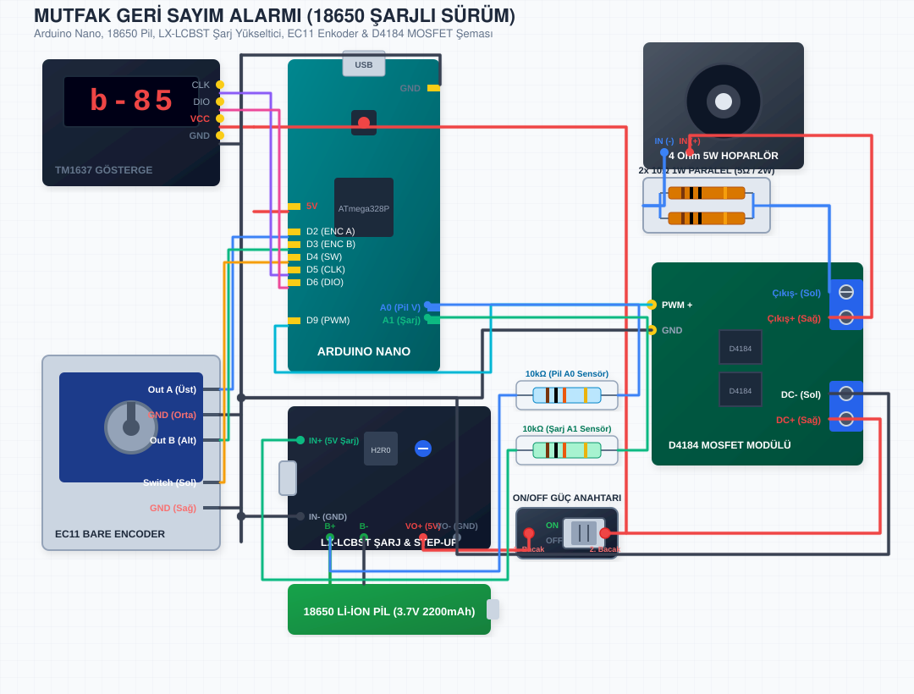

4 Ohm 5W gücündeki hoparlörün yüksek anlık akım çekerek Arduino'ya reset attırmasını engellemek amacıyla hoparlör hattına mutlaka seri olarak 10-15 Ohm en az 1W direnç bağlanmalıdır. Elinizde 1/4W dirençler varsa, 4 adet 47 Ohm 1/4W direnci birbirine paralel bağlayıp lehimleyerek 11.7 Ohm / 1W gücünde son derece güvenli bir koruma direnci oluşturabilirsiniz.
Görseldeki çiftli D4184 MOSFET modülü, sol tarafında tetikleme için sadece 2 pinden (PWM+ ve GND) beslenir. Sağ tarafında ise kalın güç bağlantıları için iki adet mavi vidalı klemens bulunur. Isınma yapmaz ve son derece kararlıdır.
Enkoderinizde iki ayrı grupta toplam 5 adet pin bulunur (Kabloları doğrudan lehimleyebilir veya dişi jumper kablo soketi kullanabilirsiniz):
Modülün sol tarafındaki küçük pin bağlantıları:
Modülün sağ tarafındaki mavi vidalı klemensler:
| Kaynak Cihaz / Modül | Modül / Cihaz Pini | Hedef Arduino / Güç Pini | İşlev |
|---|---|---|---|
| EC11 Enkoder (3'lü Grup) | Out A (Üst) | Arduino Nano D2 | Zamanlama Girişi (Kesme 0) |
| EC11 Enkoder (3'lü Grup) | GND (Orta) | Ortak GND Şasi Rayı | Döner Kısım Şasisi |
| EC11 Enkoder (3'lü Grup) | Out B (Alt) | Arduino Nano D3 | Yön Algılama (Kesme 1) |
| EC11 Enkoder (2'li Grup) | Switch (Sol) | Arduino Nano D4 | Buton Girişi (Başlat/Durdur) |
| EC11 Enkoder (2'li Grup) | GND (Sağ) | Ortak GND Şasi Rayı | Buton Şasisi |
| TM1637 Ekran | CLK | Arduino Nano D5 | Gösterge Saat Sinyali |
| TM1637 Ekran | DIO | Arduino Nano D6 | Gösterge Veri Hattı |
| TM1637 Ekran | VCC | Ortak +5V Besleme Rayı | Modül Gücü |
| TM1637 Ekran | GND | Ortak GND Şasi Rayı | Şasi Ortaklama |
| D4184 MOSFET Sinyal | (PWM) + | Arduino Nano D9 | Melodi/Alarm Sinyal Tetikleyici |
| D4184 MOSFET Sinyal | GND | Arduino Nano GND | Ortak Şasi Bağlantısı |
| D4184 MOSFET Güç Giriş | DC+ (Klemens Sağ) | Doğrudan Adaptör +5V | Adaptör Güç Girişi (+) |
| D4184 MOSFET Güç Giriş | DC- (Klemens Sol) | Doğrudan Adaptör GND | Adaptör Güç Girişi (-) |
| D4184 MOSFET Güç Çıkış | Çıkış+ (Klemens Sağ) | Hoparlör (+) Kutbu | Hoparlör Sürücü Gücü (+) |
| D4184 MOSFET Güç Çıkış | Çıkış- (Klemens Sol) | Seri Direnç ile Hoparlör (-) | Hoparlör Sürücü Şasi Anahtarı (-) |